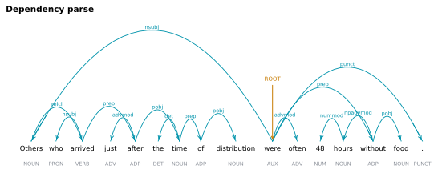

6.1.7Dependency parse
Per-token syntactic-dependency annotation.
6.1.7.1What it is
Per-token syntactic-dependency annotation. Together, dep_rel and
head_token_id encode a labelled directed tree over the sentence in
which every word points to its syntactic governor.
| Column | Meaning |
|---|---|
dep_rel |
Dependency relation label from spaCy's tagset (a superset of Universal Dependencies, De Marneffe 2021). Common values: nsubj, obj, det, amod, advmod, aux, prep, pobj, compound, ROOT. |
head_token_id |
The token_id (global, whole-document token index) of this word's syntactic head. Using the global id makes the reference self-contained against token_id and unambiguous across sentence boundaries. For the sentence's root token, head_token_id equals the word's own token_id (it points to itself). |
The UD-standard
deps(Enhanced UDs) andmisccolumns are intentionally not emitted. spaCy'sen_core_web_smdoes not produce enhanced UDs, and the only English content formiscwould beSpaceAfter=No— too thin to justify a dedicated column. If a concrete EEG use case for enhanced UDs surfaces later, a Stanza-based extractor can be added under its own toggle.
6.1.7.2See it

6.1.7.3In your output
| token_id | token_in_sentence_id | token | dep_rel | head_token_id |
|---|---|---|---|---|
| 1 | 1 | Others | nsubj | 10 |
| 2 | 2 | who | nsubj | 3 |
| 3 | 3 | arrived | relcl | 1 |
| 4 | 4 | just | advmod | 5 |
| 5 | 5 | after | prep | 3 |
| 6 | 6 | the | det | 7 |
| 7 | 7 | time | pobj | 5 |
| 8 | 8 | of | prep | 7 |
| 9 | 9 | distribution | pobj | 8 |
| 10 | 10 | were | ROOT | 10 |
| 11 | 11 | often | advmod | 10 |
| 12 | 12 | 48 | nummod | 13 |
6.1.7.4MATLAB
% Load the word-level table (one row per word)
T = readtable('word/LJ002-0321_features.csv', 'TextType', 'string');
T.Properties.VariableNames % every column in the file
head(T(:, {'token_id', 'token_in_sentence_id', 'token', 'dep_rel', 'head_token_id'}), 10) % this feature's columns (first rows)
6.1.7.5In the code
Source: sensi/extractors/text_parser.py:parse. dep_rel is read directly
from spaCy's parser (token.dep_). head_token_id is resolved
through a {token.i → token_id} map (id_by_doc_index) built over the
emitted tokens, giving the head's 1-indexed global
token_id. It is not token.head.i + 1:
whitespace tokens are skipped and never get a token_id, so the
arithmetic form would point past the first skipped token at the wrong
word (see the ⚠️ note in structural_ids). A head
that is itself whitespace falls back to the token's own token_id.
Parser model is spaCy's en_core_web_sm default — a transition-based
parser trained on OntoNotes 5.
6.1.7.6Library
import spacy
nlp = spacy.load("en_core_web_sm")
doc = nlp("The cats chased mice.")
for tok in doc:
print(tok.text, tok.dep_, "->", tok.head.text)
# The det -> cats
# cats nsubj -> chased
# chased ROOT -> chased
# mice dobj -> chased
# . punct -> chased
6.1.7.7EEG rationale
Dependency structure governs which words are predictively related at each point in the sentence — the head of a word constrains its distributional context, and unexpected head-dependent combinations generate distinct ERP signatures (Friederici 2002 on the P600; Kuperberg 2007 on syntax-semantics interaction). For naturalistic-EEG analyses:
- Dependency length (
|token_id - head_token_id|) is a classic syntactic-complexity proxy (Gibson 2000 — Dependency Locality Theory). Both endpoints are globaltoken_idvalues, so the difference is a true linear-distance-in-words measure. Empirical evaluation against eye-tracking corpora shows dependency-length-based predictions account for reading times in some contexts (e.g. for nouns), though not uniformly across all word classes (Demberg 2008). dep_rel == "ROOT"marks the syntactic centre of each sentence — useful for sentence-level anchoring.- Dependency-conditioned analyses (e.g. all words whose head is a verb) let you isolate effects that POS alone cannot.
6.1.7.8Papers
- De Marneffe 2021 De Marneffe, Manning, Nivre, Zeman. Universal Dependencies. Computational Linguistics. doi:10.1162/coli_a_00402 — the UD scheme used by
dep_rel. - Friederici 2002 Friederici. Towards a neural basis of auditory sentence processing. Trends in Cognitive Sciences. doi:10.1016/S1364-6613(00)01839-8 — neural model of syntactic processing; basis for P600 interpretation.
- Kuperberg 2007 Kuperberg. Neural mechanisms of language comprehension: Challenges to syntax. Brain Research. doi:10.1016/j.brainres.2006.12.063 — syntax-semantics interaction in ERPs.
- Gibson 2000 Gibson. The dependency locality theory: A distance-based theory of linguistic complexity. In Image, Language, Brain (MIT Press). — dependency length as a complexity metric.
- Demberg 2008 Demberg & Keller. Data from eye-tracking corpora as evidence for theories of syntactic processing complexity. Cognition. doi:10.1016/j.cognition.2008.07.008 — dependency length and reading-time measures.